这是它和“空白提示词生成器”最大的区别：先拿真实榜单校准市场，再用对标的真正文校准开篇钩子与整书节奏， 最后才排你的大纲。
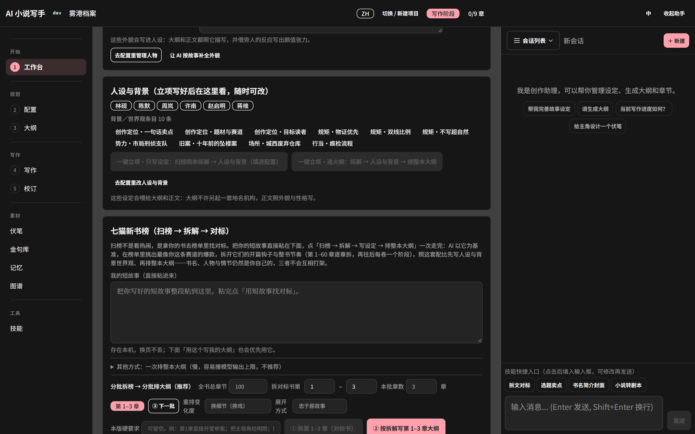
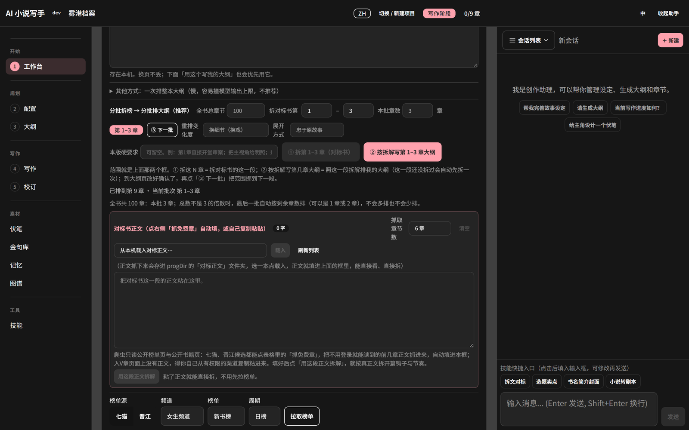
填好正文后点「用这段正文拆解」，按真正文拆开篇钩子与节奏，比只看榜单准得多。
不是“输入一句话生成一章”，而是把长篇创作拆成可审阅、可回退、可校验的工序。
进度总览：已确认、待生成、待审阅，一键继续下一章。
题材、每章字数、写作风格、叙述视角；人物卡与世界观条目。
每批 1–36 章；先按七猫 / 晋江对标拆解，再分批排纲与重排。
生成正文 → 去 AI 味 → 审核 → 确认，未确认不进下一章。
章节级、段落级、人工三种修订方式。
埋设与回收台账，完结前检查未回收项。
按题材建档，化用句式但不整句照搬。
人物、世界观、组织、关系与关键事实，按相关性召回。
实体关系图，群像戏不写串称谓与立场。
19 个可切换写作技能：扫榜、拆文、去 AI 味、章节体检。
整本 TXT；ZIP 备份含正文、设定、会话与校订状态。
数据全在本机目录，换电脑整目录拷走即可。
单章质量靠提示词，长篇质量靠状态管理。
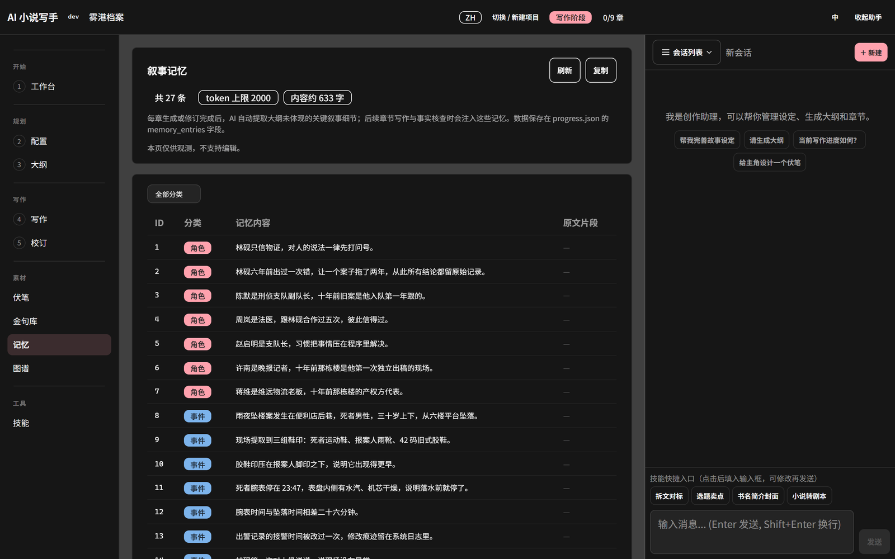
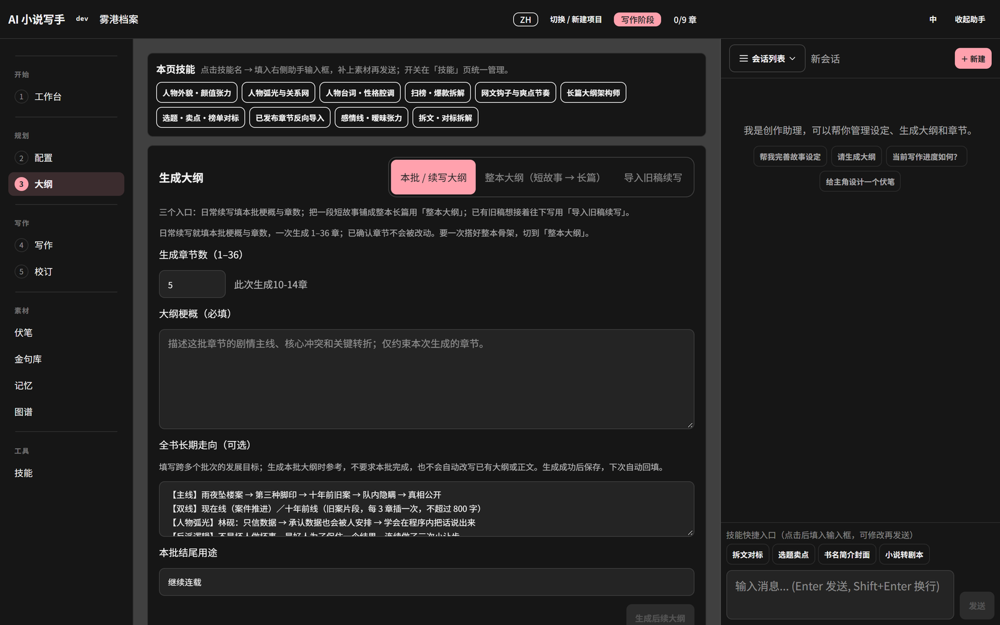
跟着工作台的提示走，就不会乱。
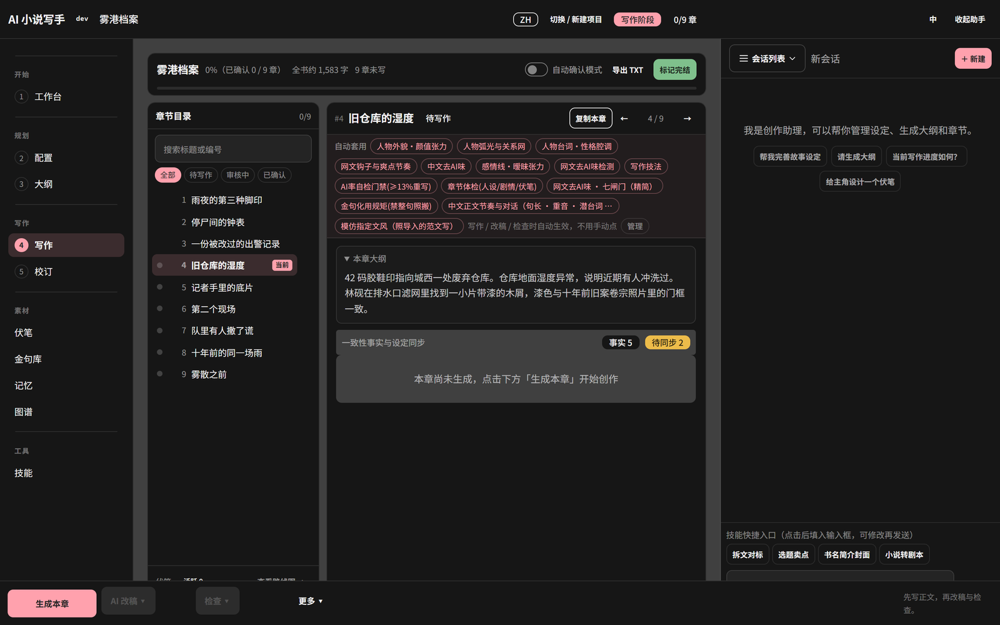
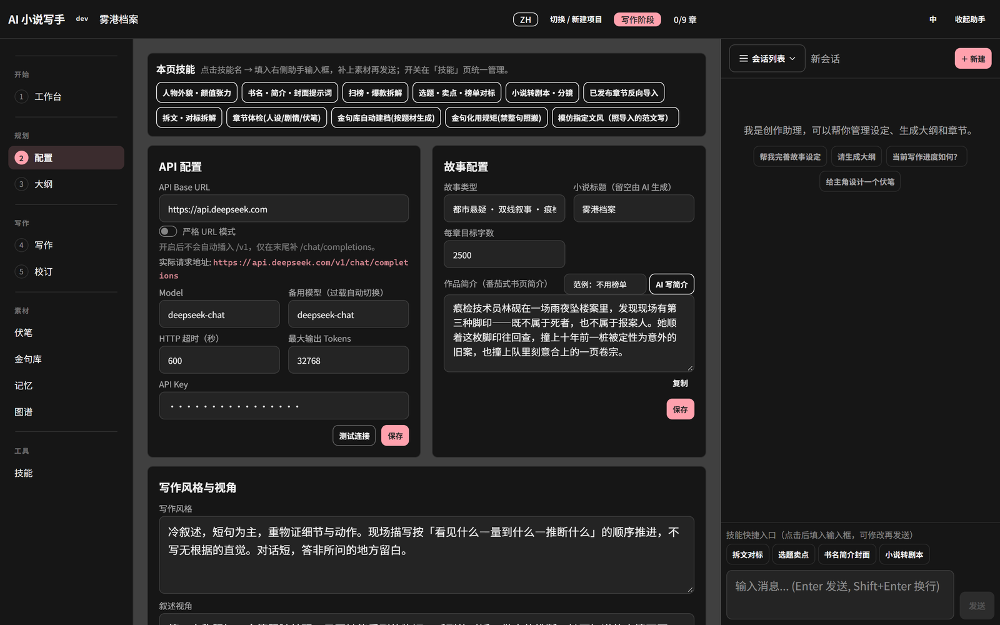
技能不是提示词收藏夹，而是挂在流程上的规则：用 skill.json 声明生效阶段，用 SKILL.md 写判定标准。
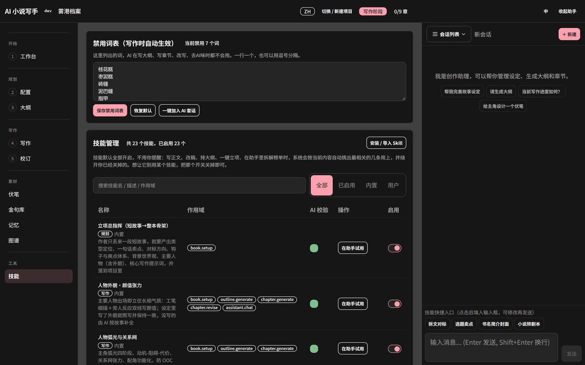
Windows 本地运行，浏览器访问。程序目录同时是数据目录。
show-me-the-story.exe，放进一个空目录。config.example.json 复制为 api.json，把占位符换成你自己的 Key。http://localhost:48090。{
"api_key": "请在这里填入你的 API Key",
"base_url": "https://api.deepseek.com",
"model": "deepseek-chat",
"fallback_model": "deepseek-chat",
"max_tokens": 32768,
"http_timeout_seconds": 600,
"context_budget_tokens": 300000
}
换用其他 OpenAI 兼容服务时，同时修改 base_url 与 model 即可。
详细步骤与每个界面的说明见 使用手册。
api.json 保存的是明文密钥，不要提交到 Git，也不要随目录打包外发。
程序默认监听所有网卡且无鉴权，只想自己使用时请以管理员身份运行「仅本机访问」脚本，或关闭服务。
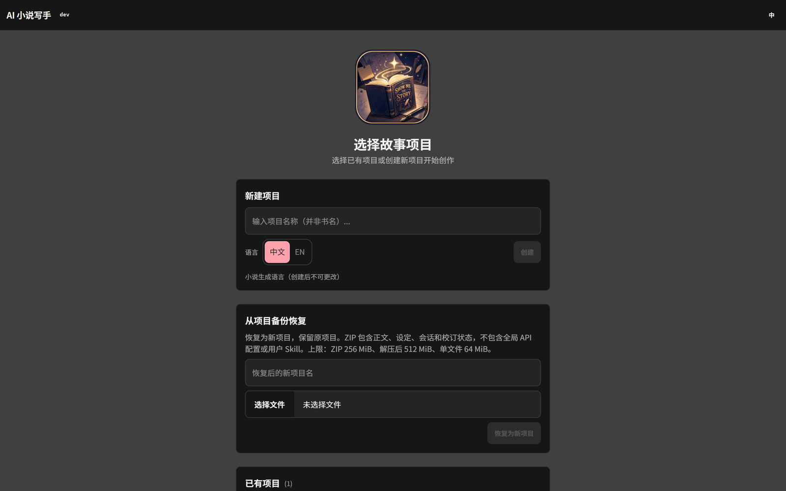
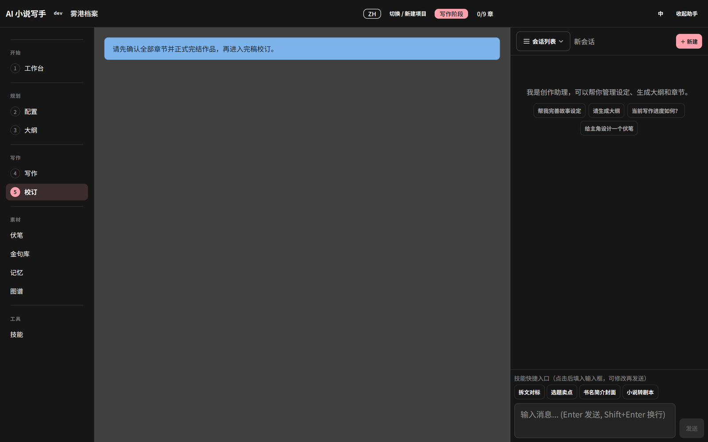
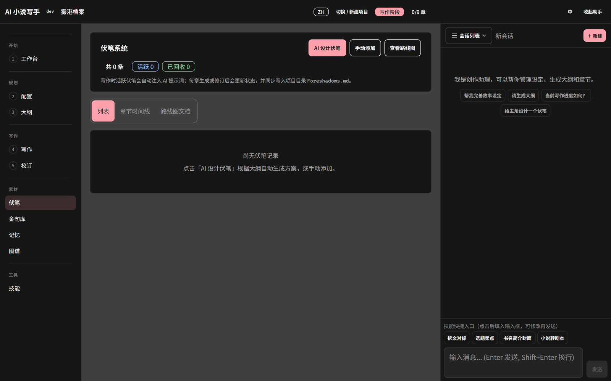
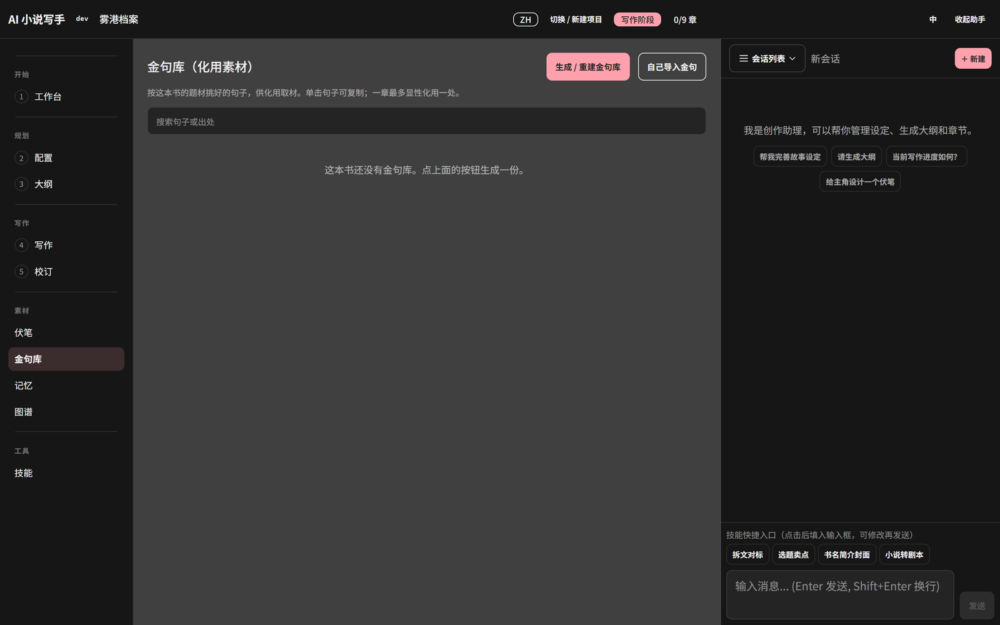
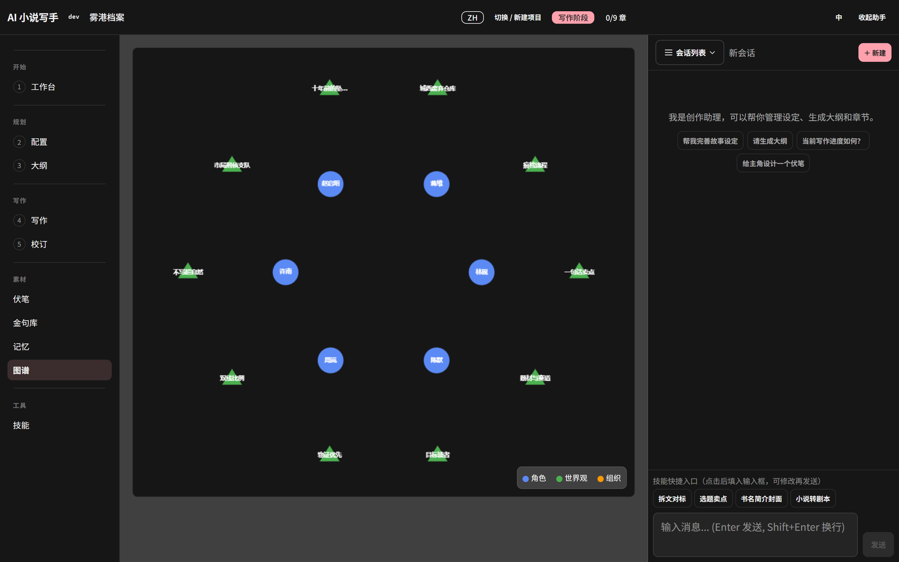